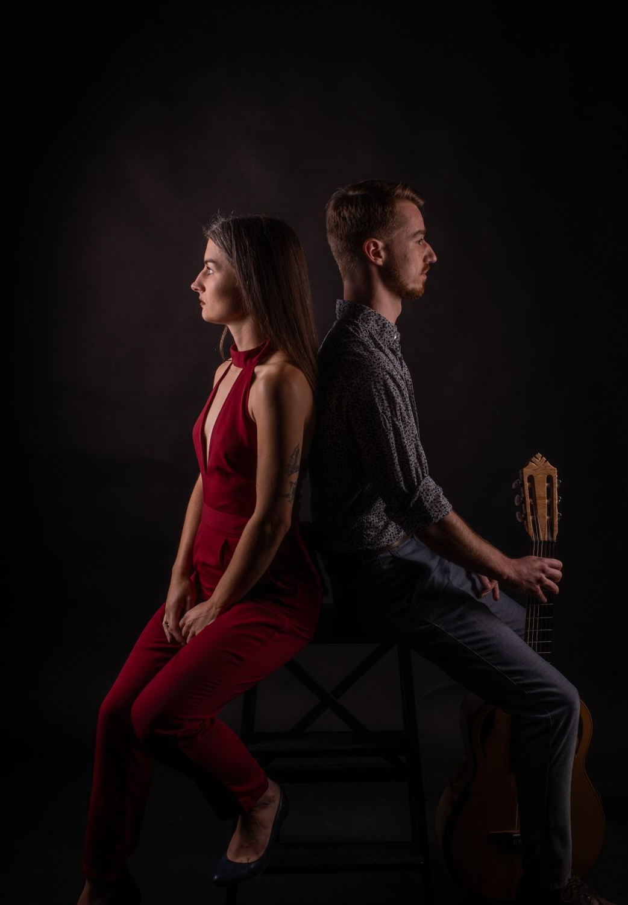
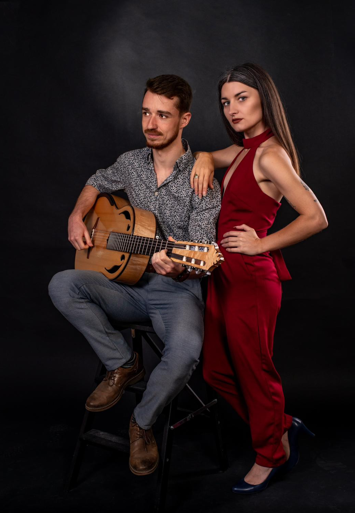

Na żywo
Występuję komercyjnie solo i w duetach podczas imprez okolicznościowych, a także cyklicznie w hotelach i restauracjach.
Zobacz ofertę na żywo
Zajmuję się muzyką na różne sposoby, od kompozycji i aranżacji po wykonywanie jej na żywo.
Występuję komercyjnie solo i w duetach podczas imprez okolicznościowych, a także cyklicznie w hotelach i restauracjach.
Zobacz ofertę na żywo
Komponuję piosenki i utwory instrumentalne, głównie na potrzeby spektakli teatralnych.
Zobacz przykładowe realizacje
Aranżuję znane utwory na gitarę solo, które następnie nagrywam i umieszczam na swoim kanale YouTube, gdzie doczekały się już setek tysięcy wyświetleń.
Zobacz spis utworów i nuty